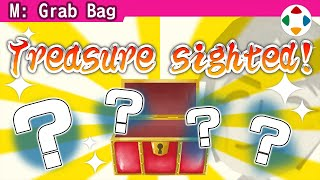
速览
樱井说他自认不是收藏家（真的），但因为立场，持有各种稀有游戏物品：作品获得的奖杯当然稀有到普通人没有，但先放一边，这次介绍几件市场上不可能流通的特别稀有之物。（他是一个人拍的，中途不能变焦，特写另外剪辑。）① Wii 遥控器：不同之处在于印着他的 Mii 头像（激光打印），是任天堂送的，Mii 刚实装时期的东西——不知道是谁做的脸。② 彼特与帕尔特娜像：五所川原立佞武多祭要做《新·光神话》的巨型灯笼，这是那时用 3D 打印做的原型，算上造型师那里大约做了 3 个，非常易碎，只能看照片。③ 认识的人多，有点狡猾：宫本茂签名的软件，写着「樱井先生谢谢」——「我才要谢谢您」；这类东西很多，但想介绍一件力作签名：漫画家福光茂之老师画的《新·光神话》签名画，他读过福光老师所有漫画，非常感动。④ Xbox 360 Elite：看似与他毫无关系，但面板上有他的名字——2005 年 12 月 360 发售时，微软似乎送了很多人，他从微软负责人那里收到；可那台 360 不久就出现所谓「红环死机」，只有这块刻名面板跨世代沿用，现在换成 Xbox Series X 没地方装了。⑤ 世嘉的认定证 No.4：80 年代后期世嘉办过企划征集活动，他投稿获得的；好像写了 JRPG 里「主动时间战斗」动作游戏化的东西——当然那时还没有 ATB，是入行之前；因此去过大鸟居的世嘉，入行后也常去，《甲虫王者》《大乱斗》的索尼克等，还去玩《冲破火网》；世嘉一楼展示着大型筐体可以玩，照片中的《冲破火网》双摇篮筐体部件完好得不可思议，据说用 3D 打印做零件来维护——另一种意义上的孤品。加上活动周边能介绍更多，这次以几乎算孤品、但大概卖不出价钱的东西为主。
1. 不是收藏家 0:08
樱井自认不是收藏家（真的），但因立场持有各种稀有游戏物品。
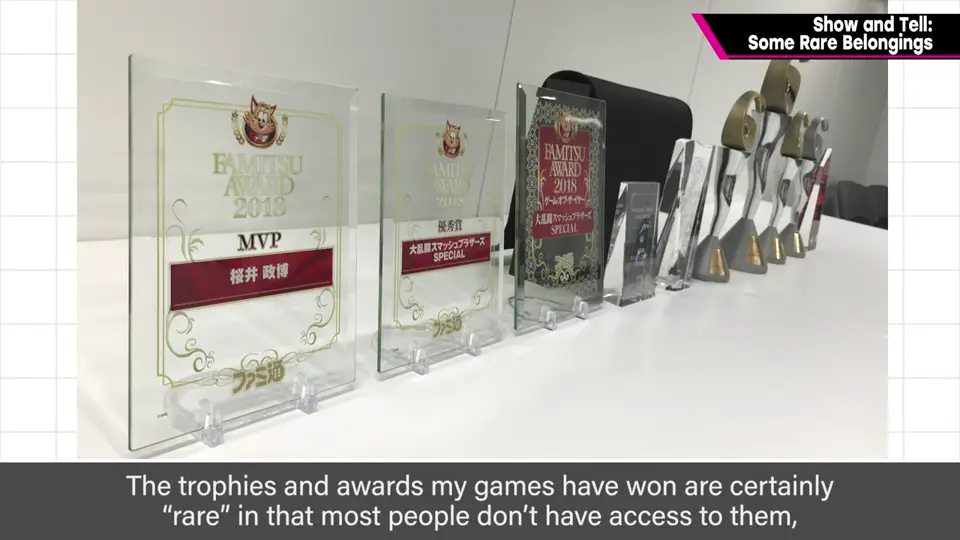
奖杯当然稀有到普通人没有，但先放一边——这次介绍几件市场上不可能流通的特别稀有之物。他是一个人拍的，特写另外剪辑。
2. Mii 头像 Wii 遥控器 0:48
一支 Wii 遥控器——不同之处在于用激光打印印着他的 Mii 头像。任天堂送的，Mii 刚实装时期的东西，不知道是谁做的脸。
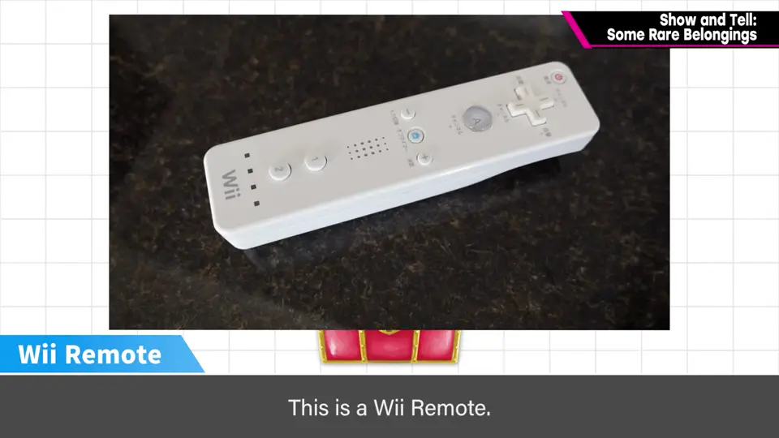
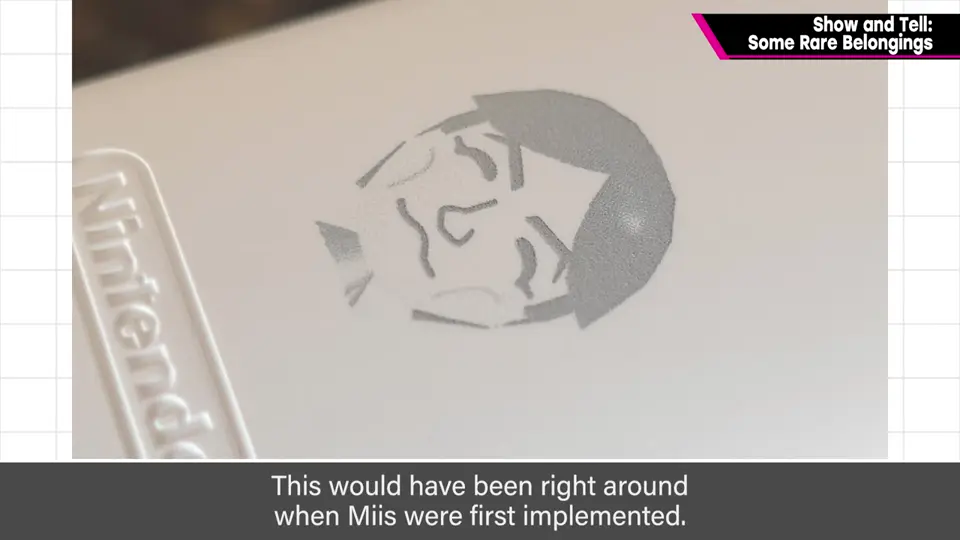
3. 立佞武多的 3D 打印原型 1:04
五所川原立佞武多祭要做《新·光神话》的巨型灯笼，这是当时用 3D 打印做的原型。算上造型师那里大约做了 3 个。
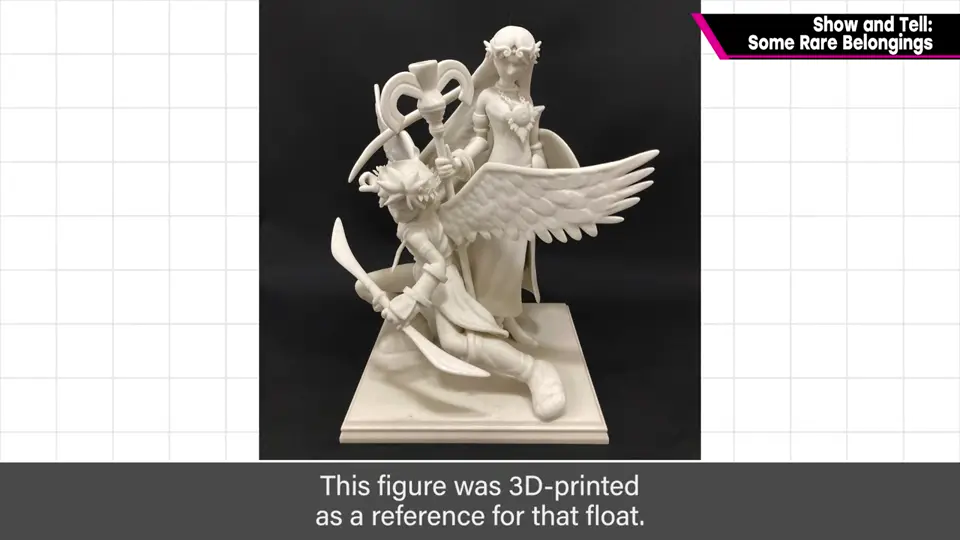
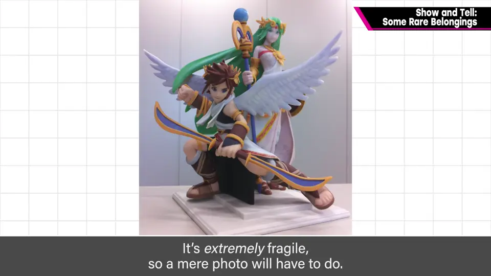
4. 签名 1:41
认识的人多，有点狡猾：宫本茂签名的软件，写着「樱井先生谢谢」——「我才要谢谢您」。
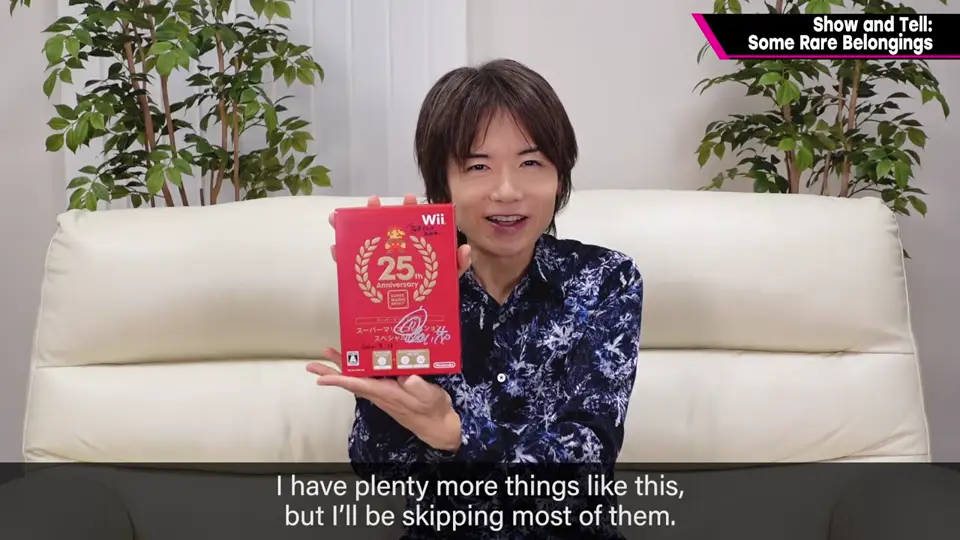
这类东西很多，但想介绍一件力作签名：漫画家福光茂之老师画的《新·光神话》签名画。他读过福光老师所有漫画，非常感动。
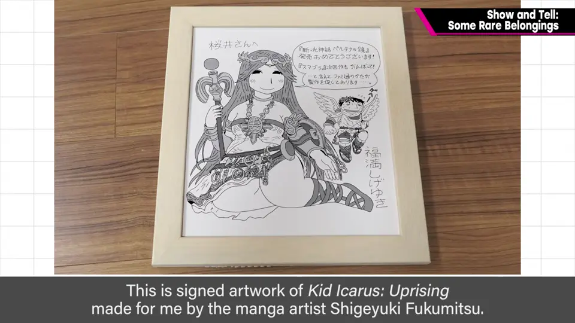
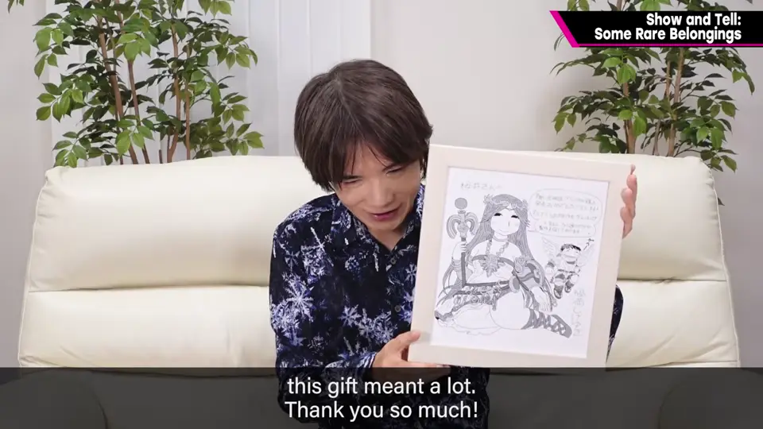
5. 刻名 Xbox 360 面板 2:30
Xbox 360 Elite 看似与他毫无关系，但面板上有他的名字：2005 年 12 月 360 发售时，微软似乎送了很多人，他从微软负责人那里收到。
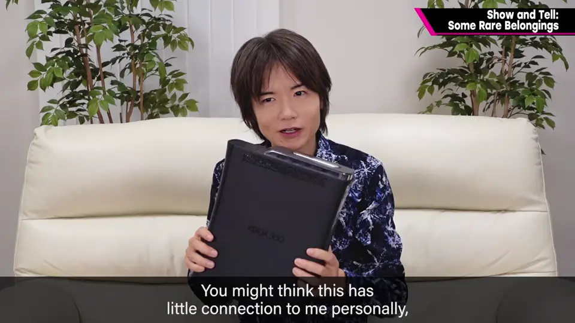
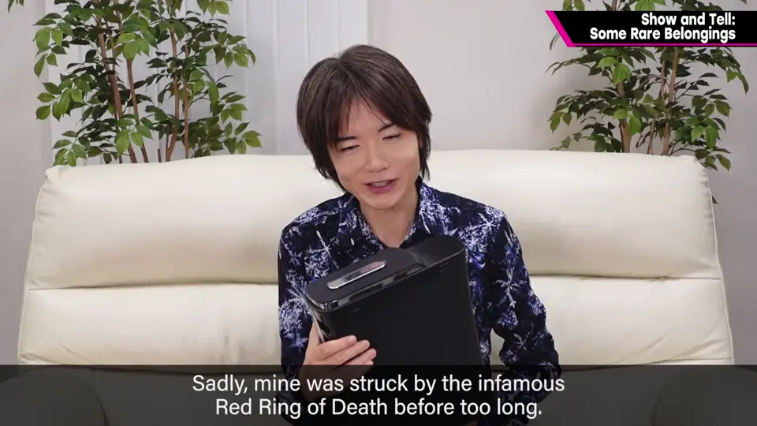
可那台 360 不久就出现所谓「红环死机」，只有这块刻名面板跨世代沿用；现在换成 Xbox Series X，没地方装了。
6. 世嘉的认定证 3:12
80 年代后期世嘉办过企划征集活动，他投稿获得了认定证 No.4。好像写的是把 JRPG 的「主动时间战斗」做成动作游戏风的东西——当然那时还没有 ATB，是入行之前。
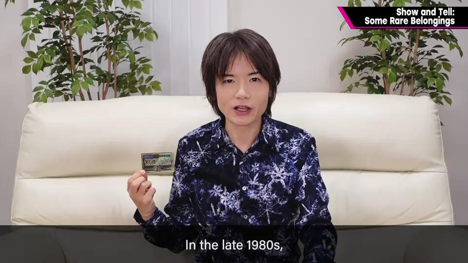
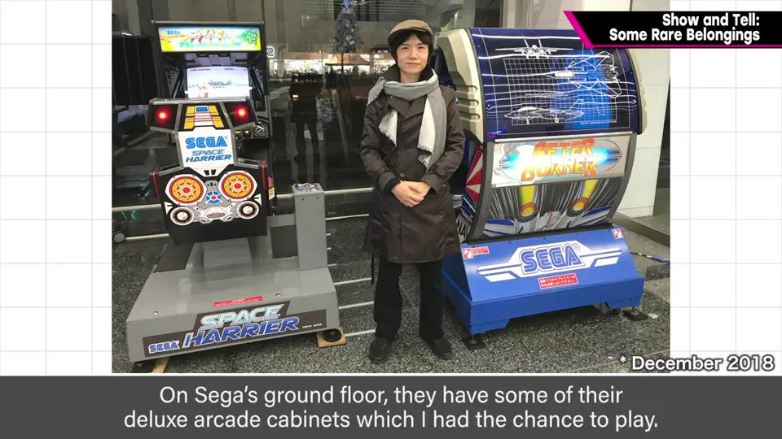
因此去过大鸟居的世嘉，入行后也常去：《甲虫王者》《大乱斗》的索尼克等，还去玩《冲破火网》。
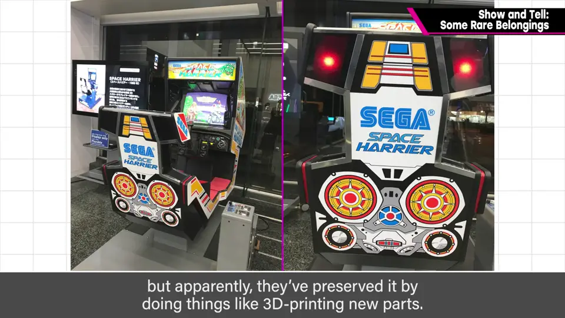
加上活动周边能介绍更多，这次以几乎算孤品、但大概卖不出价钱的东西为主。
自测题
1. 那支特别的 Wii 遥控器有什么不同？
用激光打印印着樱井的 Mii 头像，是任天堂送的。 1:04
2. 刻着他名字的 Xbox 360 面板后来怎样了？
360 出现红环死机，面板沿用到下一代；换成 Series X 后没地方装了。 3:00
3. 世嘉的认定证是怎么得来的？
80 年代后期投稿世嘉的企划征集活动获得，构想是动作化的主动时间战斗。 3:24